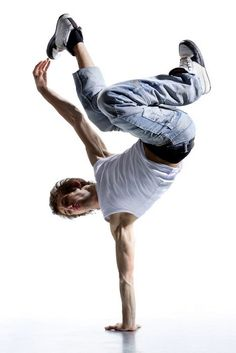
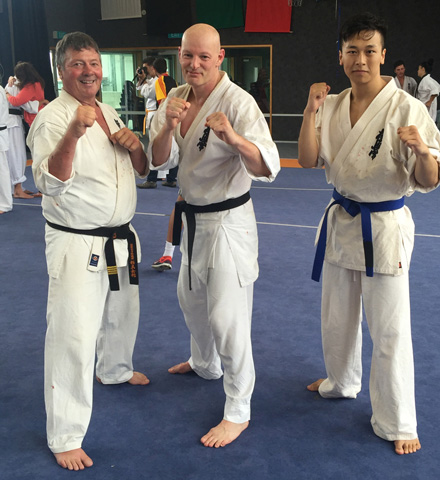

- Gancho Iliev
- Home
- Experience
- Photos
- Hobbies
- Contact
Hobbies
-
Break Dance
One of my biggest passions. I spent about 5-6 years of my life, dancing. I don't do it proffesionaly anymore but I still enjoy watching videos or go to events from time to time.

-
Athletics
I spend 2 years running long distances every day. Without any day off. Only hard work. I was able to run up to 15-20 miles at a time.

-
Kyokushin
I love kyokushin. I am still training when I have time. During the years of practicing Kyokushin I learnt how to be disciplined, to belive in my self, to be a better person. And of course how to defend myself or a person in need. Osu!

-
Fishing
Ever since I was a boy, I’ve enjoyed fishing. But the older I get the more I realize I don’t just enjoy it. I really need fishing. It gives you a chance to really detach from your work, It enables you to shift your focus to the present, to reconnect with your heart, to reconnect with your childhood, It provides an opportunity to put things into perspective.

Learn more for each Hobby
- The History of Break Dancing - Click Here
- My favorite Athlete - Click Here
- The History of Kyokushin - Click Here
- Fishing - Click Here